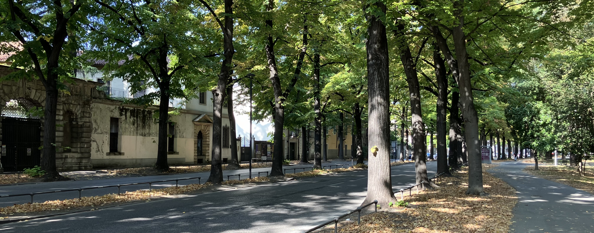

Current Position
Institute: Robot Learning Lab
@ Nara Institute of Science and Technology (NAIST)
Position: Specially Appointed Assistant Professor
Contact: yamanokuchi.tomoya[at]naist.ac.jp
Research Interests
- Bayesian Probabilistic Inference
- Representation Learning
- Sim-to-Real Transfer
- Visual Model Predictive Control
- Grasp Planning
Education
2012.4 - 2017.3
Department of Electronics and Control Engineering, National Institute of Technology (KOSEN), Niihama College
2017.4 - 2019.3
Electronic Engineering Program, Advanced Engineering Course, National Institute of Technology (KOSEN), Niihama College
2019.4 - 2021.3
Master's Course, Division of Information Science, Nara Institute of Science and Technology (NAIST), Japan
2021.4 - 2024.3
Doctoral Course, Division of Information Science, Nara Institute of Science and Technology (NAIST), Japan: [Thesis] Disentangled Dynamics Learning through Randomized-to-Canonical Visual Translation for Sim-to-Real Robotic Manipulation [Link]
Publication
Journal papers
- Tomoya Yamanokuchi, Yuhwan Kwon, Yoshihisa Tsurumine, Eiji Uchibe, Jun Morimoto, and Takamitsu Matsubara: Randomized-to-Canonical Model Predictive Control for Real-world Visual Robotic Manipulation, IEEE Robotics and Automation Letters, vol.7, pp.8964-8971, 2022. [Preject Page] [arXiv] [IEEE] [Youtube]
- Tomoya Yamanokuchi, Shin Ando, Koji Kinoshita, Alireza Bahadori, Tomoaki Kashiwao, :“Prediction of Accelerator Operation Using Machine Learning,” IEEJ Transactions on Electrical and Electronic Engineering, Vol.13, No.4, pp.656-657, 2018. [Link]
International Conference
- Tomoya Yamanokuchi, Alberto Bacchin, Emilio Olivastri, Takamitsu Matsubara, Emanuele Menegatti: Disentangled Iterative Surface Fitting for Contact-stable Grasp Planning, The 19th international conference on Intelligent Autonomous Systems (IAS), 2025 (Best Paper Award Finalist) [Preject Page] [arXiv] [Youtube]
- Jia Qu, Shun Otsubo, Tomoya Yamanokuchi, Takamitsu Matsubara and Shotaro Miwa: Domain Randomization-free Sim-to-Real: An Attention-Augmented Memory Approach for Robotic Tasks, IEEE/RSJ International Conference on Intelligent Robots and Systems (IROS), 2024.
- Tomoya Yamanokuchi, Yuhwan Kwon, Yoshihisa Tsurumine, Eiji Uchibe, Jun Morimoto, and Takamitsu Matsubara: Randomized-to-Canonical Model Predictive Control for Real-world Visual Robotic Manipulation, IEEE/RSJ International Conference on Intelligent Robots and Systems (IROS), 2022 [Preject Page] [arXiv] [IEEE] [Youtube]
- Tomoya Yamanokuchi, Ryoya Hayashi, and Daisuke Tanaka: “Dimensionality Reduction Method for Gaussian Process Regression and Its Application to Object Recognition Tasks,” SICE Annual Conference , pp.646-649, 2018. [Link]
Domestic Conference
- 中村維冴，山之口智也，角川勇貴，曲佳，大坪舜，三輪祥太郎，松原崇充: “Sim-to-Real 方策転移のためのダイナミクスランダム化対照強化学習,” ロボティクス・メカトロニクス講演会, 1P2-K08, 2024. (ポスター)
- 山之口智也, 鶴峯義久, 佐々木光, 内部英治, 森本淳, 松原崇充: “潜在動的モデルを持つ Real-to-Sim 画像変換の学習,” ロボティクス・メカトロニクス講演会, 1P1-B07, 2020. (ポスター) [Link]
- 山之口智也, 高井利憲, 辻光顕: “機械学習応用システムの安全要求に関する記述について,” IPSJ/SIGSE Winter Workshop, 2020.(口頭) [Link]
- 山之口智也, 田中大介: “ガウス過程回帰のための次元削減法,” 電気関係学会四国支部連合大会, pp.123-124, 2017. (口頭)
- 山之口智也, 安藤慎, 木下浩二, 柏尾知明: “サポートベクターマシンを用いたアクセル操作の予測,” 計測自動制御学会 四国支部学術講演会 , pp.119-121, 2016. (ポスター)
Awards
- Best Paper Award Finalist of IAS-19 (2025)
- IEEE Robotics and Automation Society Japan Joint Chapter Young Award (2022) [IEEE RAS JJC] [NAIST Award Page]
- 2022 博士キャリアメッセKYOTO 島津製作所賞 [NAIST Award Page]
Scholarship & Grant
- Japan Student Services Organization (JASSO), Scholarship (Return Exemption Half Amount), 2023
- Japan Society for the Promotion of Science (JSPS), Research Fellowship for Young Scientists: DC2 (Obtaining Research Funding and Salaries), 2023
- Japan Student Services Organization (JASSO), Scholarship (Return Exemption Half Amount), 2021
Overseas Experience
- 3rd October - 7th November, 2023, Visiting Ph.D Student, Intelligent Autonomous Systems Laboratory (IAS-Lab), University of Padua, Italy
- 18th September - 13th December, 2024, Visiting Scholar, Intelligent Autonomous Systems Laboratory (IAS-Lab), University of Padua, Italy
Skils
- Deep Learning Library (Pytorch, Tensorflow1)
- Programming Languages (Python, MATLAB)
- Image Processing (OpenCV)
- Robot System Integration (ROS)
- Robot Simulator Design (Mujoco)
- Software Design (Domain Driven Design)
Link
GitHub: https://github.com/tomoya-yamanokuchiGoogle Scholar: https://scholar.google.co.jp/citations?user=LOCHL8UAAAAJ&hl=ja